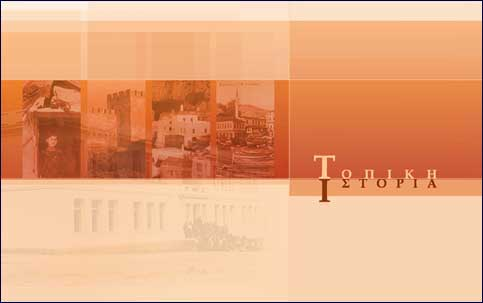
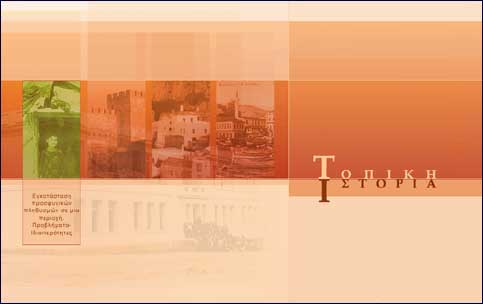

| Εγχειρίδιο Χρήσης |
2. Αρχική ΣελίδαΣτην αρχική σελίδα εμφανίζονται οι τέσσερις θεματικές ενότητες του εκπαιδευτικού λογισμικού για την Τοπική Ιστορία. Κάθε φορά που περνάει ο κέρσορας («ποντίκι») πάνω από την περιοχή της κάθε ενότητας, εμφανίζεται ο τίτλος της. Πατώντας στην ίδια περιοχή μπορείτε να μεταφερθείτε στην αντίστοιχη ενότητα.  Εικόνα 2.1 Αρχική σελίδα  Εικόνα 2.2 Αρχική σελίδα με εμφάνιση τίτλου ενότητας. |